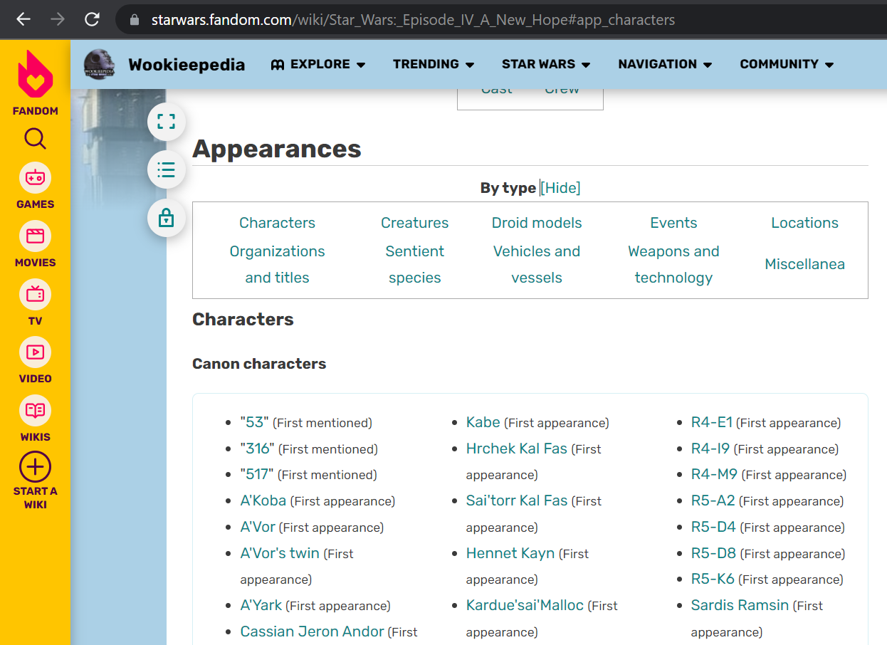

The Star Wars data¶
The data used for the analysis is a data frame containing all the characters in the chosen Star Wars movies, meaning all movies in the Skywalker saga (Star Wars 1-9). The data frame is created such that we will get an easy overview of all characters and their associated attributes. The information of characters will come from the Star Wars fandom wiki. There exists a unique wiki page for each movie, where all the characters appearing in the movie will be listed. An example is:

The characters in our data frame will be from Characters and Creatures in the web pages. Furthermore, we will only extract the characters categorized as cannon, which means we will ignore legend characters. We have chosen to add homeworld, species, gender, affiliation and alliance. We have in total 1397 unique characters. Here we an example of the data frame.
| Name | Appearance | Homeworld | Species | Gender | Affiliation | Alliance | File_Name | |
|---|---|---|---|---|---|---|---|---|
| 7 | Yané | [1] | ['Naboo'] | ['Human (Naboo)'] | ['Female'] | ['Royal House of Naboo', 'Naboo Royal Handmaid... | Good | Yané |
| 195 | Anakin Skywalker | [1, 2, 3, 4, 5, 6, 7, 8, 9] | ['Tatooine'] | ['Human'] | ['Male'] | ['Skywalker family', 'Jedi Order', 'Jedi High ... | Mix | Anakin Skywalker |
| 648 | Unidentified female First Order officer | [7] | [] | ['Human'] | ['Female'] | ['First Order', 'First Order military'] | Evil | Unidentified female First Order officer |
| 948 | R2-D2 | [1, 2, 3, 4, 5, 6, 7, 8, 9] | ['Naboo'] | ['Droid'] | ['Masculine programming'] | ['Royal House of Naboo', 'Jedi Order', 'Galact... | Good | R2-D2 |
| 1285 | Finn | [7, 8, 9] | [] | ['Human'] | ['Male'] | ['First Order', 'Batch Eight', 'FN Corps', 'Re... | Mix | Finn |